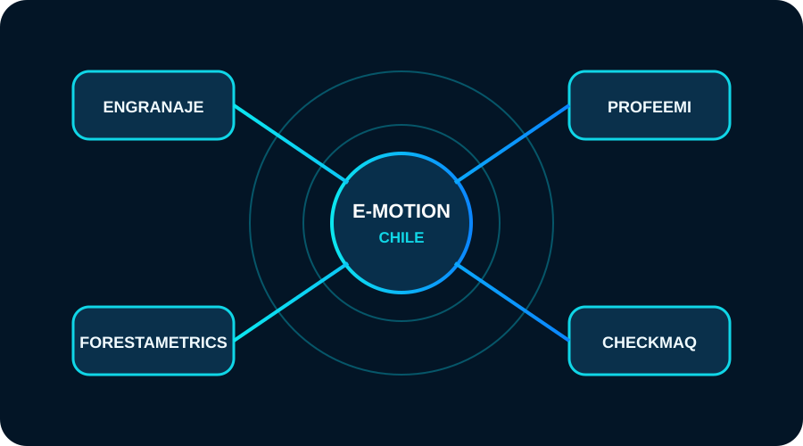
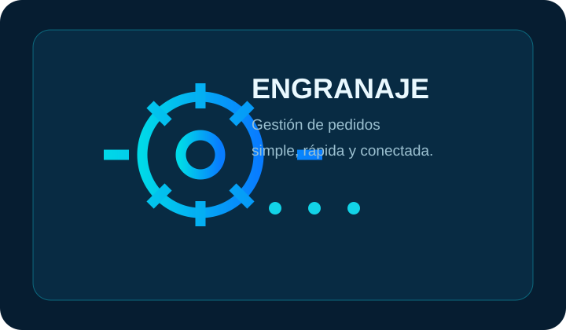

Observamos
Miramos la realidad antes de decidir qué construir.
Tecnología que acerca personas, negocios y conocimiento. Creamos soluciones digitales a partir de problemas reales.
Empezamos por entender el problema, observar cómo funciona y descubrir dónde la tecnología realmente puede aportar.
Miramos la realidad antes de decidir qué construir.
Buscamos la estructura detrás del problema.
Transformamos una idea útil en una solución.
Cada uso nos entrega información para evolucionar.
Entra por E-motion Chile y descubre soluciones construidas para necesidades diferentes.


Gestiona pedidos de forma simple, ordenada y conectada.
Entrar a Engranaje →Aprendizaje guiado que busca entender cómo aprende cada estudiante.
Conocer ProfeEmi →EN DESARROLLODatos y gestión forestal para convertir información de terreno en decisiones.
Conocer ForestaMetrics →EN DESARROLLOControl de maquinaria, checklist, mantención y trazabilidad.
Conocer CheckMaq →Construimos, probamos, aprendemos y volvemos a construir.